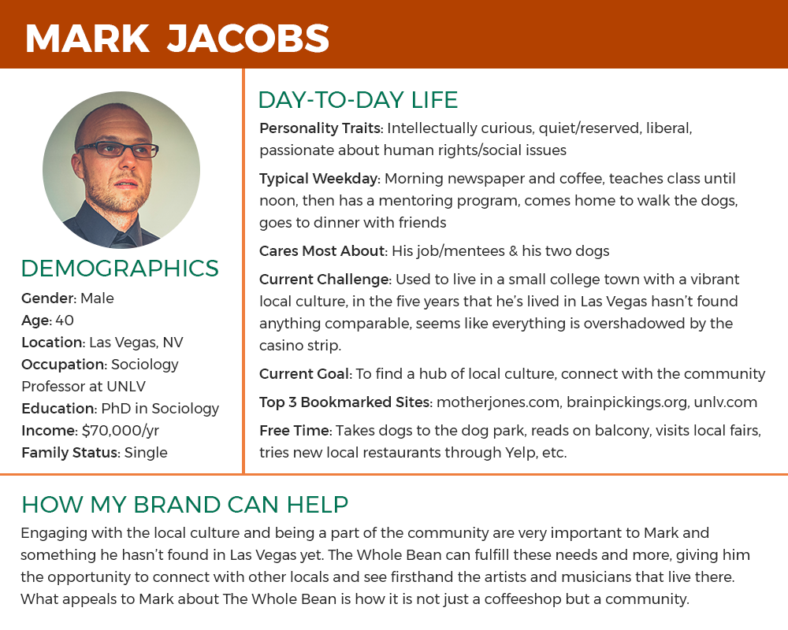
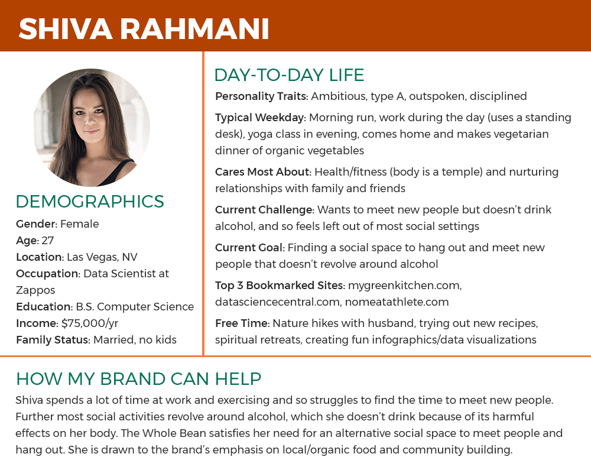
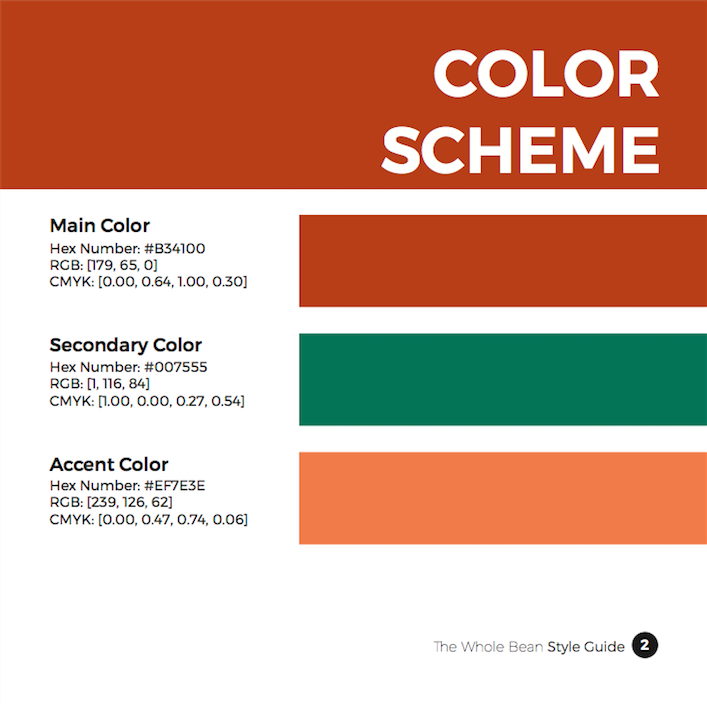
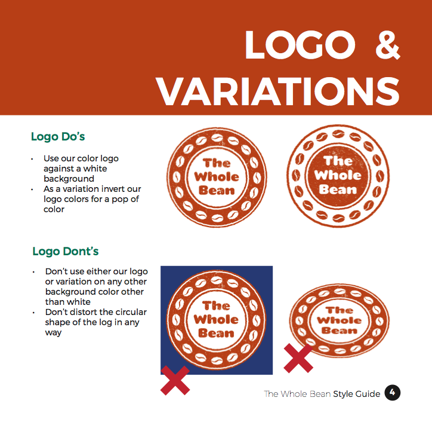

Designed a brand identity, including logo and style guide, as well as a landing page
Class Project
Challenge
The Whole Bean is a new coffeeshop that has yet to develop any visual design elements. My task was to create an entire brand identity from scratch, from user personas and logo design to the landing page of the coffeeshop's grand opening.
Process
I began by crafting a brand personality for The Whole Bean, whose mission is to bring community back to the coffeeshop. I then conducted market research and drafted several user personas. Drawing from these personas as well as competitive analysis, I developed a complete identity system for The Whole Bean brand, including a logo, color scheme, typescale, imagery and icons. I then created a style guide based on this brand identity system.
User Personas


Pages from Style Guide


Results
Over the course of a few weeks, I was able to build a brand and create associated identity design deliverables. From the start I designed everything with the users in mind, focusing on my client’s mission and target audience.
All of these elements culminated in a landing page featuring the grand opening of The Whole Bean.